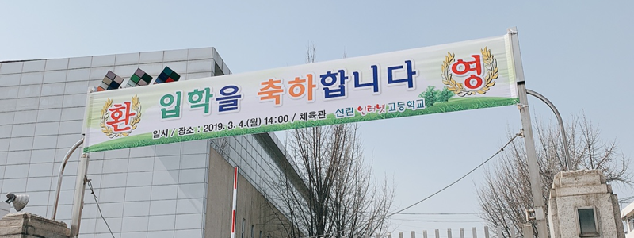

Jimin Son (0xJam)
2019년, 선린인터넷고등학교를 입학하다.
💁2019년 03월 04일 입학을 하다

필자는 2019년 03월 04일 선린인터넷고등학교 IT 경영과로 입학을 하게 되었습니다.
하지만 처음부터 선린인터넷고등학교를 지원한 것은 아니였습니다.
처음 지원한 학교는 한국디지털미디어고등학교라는 경기도 안산에 위차한 IT 특성화 학교였습니다.
중학교 3학년 때 한국디지털미디어고등학교를 알게 되었고 차근차근 준비하였습니다.
하지만, 예상했던 결과와 다르게 합격자 명단엔 제 이름이 없었고 그날 저는 인생에서 제일 불행한 날이였습니다.
저는 떨어진 이후 실망하지 않고 인문계를 가는 것보단 다른 특성화를 가서
내가 하고 싶은 거하고 사는 것이 좋다고 생각을 하였습니다.
그러하여 저는 중학교 3학년 담임선생님을 설득하여 선린인터넷고등학교 일반전형에 지원하게 되었습니다.
다행스럽게 결과는 합격이었지만 원하는 과는 아니였습니다. 하지만, 원하는 과가 아니더라도 저는 주어진 위치에서
열심히 노력하고 행동하면 원하던 과에 있는 것보다 더 많은 히스토리를 만들 수 있다고 생각하게 되었습니다.
그래서 저는 2019년 03월 04일 선린인터넷고등학교를 입학하게 되었습니다.